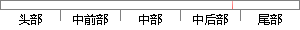

图4-24 保存和恢复CPSR寄存器代码
片段位置图

相似结果
相似片段：处理器有将堆栈指针和其他CPU寄存器存储和读出到堆栈...退出临界代码段,恢复CPSR值。代码如下:稃defineOSC对...～■薅陟’j???一???t酣m 箧I图4-24串口数据...
| 标题 | 《基于ARM的无线生理参数测量系统网关的研究》 |
| 对比库 | 中国学位论文全文数据库 |
| 作者 | 曹丹 |
| 机构 | 东南大学 |
| 分类 | 学习科学 |
| 年份 | 2010 |
| 相似率 | 64.71% （轻度抄袭） |
※ 片段修改建议 ※
近似词参考：- 恢复：规复
- 保存：保留 留存 生存
系统自动生成语句：图4-24 保留和规复CPSR寄存器代码
注：本片段修改建议为系统自动生成，仅供参考。